Vores vision er at være mere end bare et spillested – Vi er et sted, hvor eksperimenterende og nicheprægede genrer får plads til at blomstre, og hvor talent kan vokse.
Vi er dedikeret til at støtte unge musikere og kunstnere, og skabe et vækstcenter, hvor kunstneriske projekter med stærk lokal tilknytning kan få rum til at blomstre. Vi skaber et rum, hvor musik og scenekunst mødes, og hvor både artister og publikum kan føle sig hjemme og få unikke oplevelser.
Med din hjælp kan du være med til at styrke et sted, der tror på at give plads til det alternative og det nye. Radar er et sted som ingen andre, og vi tør stå ved det, fordi vi ved, at vi skaber noget unikt. Noget unikt vi ønsker du vil være del af!